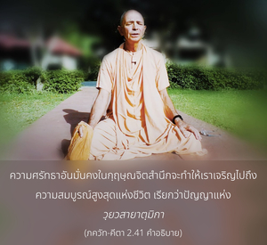
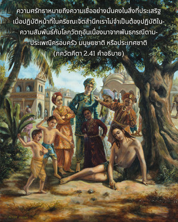
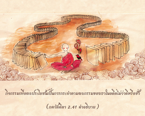
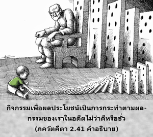
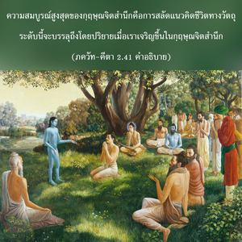

โอ้ ผู้เป็นที่รักแห่งราชวงศ์ กุรุ บุคคลผู้ที่เดินอยู่บนหนทางสายนี้มีเป้าหมายที่แน่วแน่และมีจุดมุ่งหมายเป็นหนึ่ง ปัญญาของผู้ที่ไม่แน่วแน่มั่นคงจะแตกสาขามาก





ความศรัทธาอันมั่นคงในกฺฤษฺณจิตสำนึกจะทำให้เราเจริญไปถึงความสมบูรณ์สูงสุดแห่งชีวิต เรียกว่าปัญญาแห่ง วฺยวสายาตฺมิกา ใน ไจตนฺย-จริตามฺฤต (มธฺย 22.62) กล่าวไว้ว่า
‘ศฺรทฺธา’-ศพฺเท – วิศฺวาส กเห สุทฺฤฒ นิศฺจย
กฺฤษฺเณ ภกฺติ ไกเล สรฺว-กรฺม กฺฤต หย
ความศรัทธา หมายถึง ความเชื่ออย่างมั่นคงในสิ่งที่ประเสริฐ เมื่อปฏิบัติหน้าที่ในกฺฤษฺณจิตสำนึกเราไม่จำเป็นต้องปฏิบัติในความสัมพันธ์กับโลกวัตถุอันเนื่องมาจากพันธกรณีตามประเพณีครอบครัว มนุษยชาติ หรือประเทศชาติ กิจกรรมเพื่อผลประโยชน์เป็นการกระทำตามผลกรรมของเราในอดีตไม่ว่าดีหรือชั่ว เมื่อเราได้ตื่นขึ้นมาในกฺฤษฺณจิตสำนึก เราก็ไม่จำเป็นต้องพยายามเพื่อให้ได้ผลดีในกิจกรรมของเรา หากสถิตในกฺฤษฺณจิตสำนึกแล้วกิจกรรมทั้งหมดจะอยู่ในระดับที่สมบูรณ์ ไม่ขึ้นอยู่กับสภาวะคู่ เช่น ความดีหรือความชั่ว ความสมบูรณ์สูงสุดของกฺฤษฺณจิตสำนึก คือ การสลัดแนวคิดชีวิตทางวัตถุ ระดับนี้จะบรรลุถึงโดยปริยายเมื่อเราพัฒนาขึ้นในกฺฤษฺณจิตสำนึก
จุดมุ่งหมายอันแน่วแน่ของบุคคลในกฺฤษฺณจิตสำนึกมีพื้นฐานอยู่ที่ความรู้ วาสุเทวห์ สรฺวมฺ อิติ ส มหาตฺมา สุ-ทุรฺลภห์ บุคคลในกฺฤษฺณจิตสำนึกคือดวงวิญญาณดีที่หาได้ยาก และเป็นผู้รู้อย่างสมบูรณ์ว่าองค์ วาสุเทว หรือองค์กฺฤษฺณทรงเป็นรากฐานแห่งแหล่งกำเนิดของปรากฏการณ์ทั้งมวล ด้วยการรดน้ำที่รากของต้นไม้เท่ากับเราได้แจกจ่ายน้ำไปที่ใบและกิ่งก้านสาขาโดยปริยาย ฉะนั้น ด้วยการปฏิบัติในกฺฤษฺณจิตสำนึกเท่ากับเป็นการรับใช้อย่างสูงสุดแด่ทุกๆ คน เช่น รับใช้ตัวเราเอง ครอบครัว สังคม ประเทศชาติ มนุษยชาติ หากองค์ศฺรีกฺฤษฺณทรงพอพระทัยในการปฏิบัติของเราทุกๆ คนก็จะพึงพอใจ
อย่างไรก็ดี การอุทิศตนเสียสละรับใช้ในกฺฤษฺณจิตสำนึกทำได้ดีที่สุดภายใต้คำแนะนำที่ถูกต้องของพระอาจารย์ทิพย์ ซึ่งเป็นผู้แทนที่เชื่อถือได้ขององค์กฺฤษฺณ ท่านรู้ธรรมชาติของศิษย์และสามารถนำศิษย์ให้ปฏิบัติในกฺฤษฺณจิตสำนึกได้ ดังนั้น การจะเป็นผู้มีความชำนาญในกฺฤษฺณจิตสำนึกเราต้องปฏิบัติตามผู้แทนขององค์กฺฤษฺณอย่างแน่วแน่ และเราควรน้อมรับคำสั่งสอนของพระอาจารย์ทิพย์ผู้ที่เชื่อถือได้เสมือนเป็นภารกิจแห่งชีวิตของเรา ศฺรีล วิศฺวนาถ จกฺรวรฺตี ฐากุร สอนเราในบทมนต์ที่มีชื่อเสียงเกี่ยวกับพระอาจารย์ทิพย์ ดังนี้
ยสฺย ปฺรสาทาทฺ ภควตฺ-ปฺรสาโท
ยสฺยาปฺรสาทานฺ น คติห์ กุโต ’ปิ
ธฺยายนฺ สฺตุวํสฺ ตสฺย ยศสฺ ตฺริ-สนฺธฺยํ
วนฺเท คุโรห์ ศฺรี-จรณารวินฺทมฺ
“การทำให้พระอาจารย์ทิพย์พึงพอใจ องค์ภควานฺก็จะทรงพึงพอพระทัย หากพระอาจารย์ทิพย์ไม่พึงพอใจ เราจะไม่มีโอกาสได้รับการส่งเสริมมาสู่ระดับแห่งกฺฤษฺณจิตสำนึกได้ ฉะนั้น ข้าพเจ้าควรทำสมาธิและสวดมนต์ภาวนาเพื่อพระเมตตาจากพระอาจารย์ทิพย์วันละสามครั้ง และแสดงความเคารพอย่างสูงแด่ท่าน”
อย่างไรก็ดี กรรมวิธีทั้งหมดนี้ขึ้นอยู่กับความรู้อันสมบูรณ์ว่าดวงวิญญาณอยู่เหนือแนวความคิดทางร่างกาย นี่ไม่ใช่เป็นเพียงทฤษฎีเท่านั้น แต่เป็นการปฏิบัติจริงเพื่อไม่เปิดโอกาสให้บุคคลได้สนองประสาทสัมผัส ซึ่งปรากฏออกมาในกิจกรรมเพื่อผลประโยชน์ทางวัตถุ ผู้ไม่มีจิตใจที่แน่วแน่มั่นคงจะถูกหันเหไปในกิจกรรมเพื่อผลประโยชน์ทางวัตถุต่างๆ นานา